«Принято» означает прохождение фиксированных внутренних проверок, а не доказанную точность реконструкции. Отложены целые области обоих фото. Жёсткое совмещение сохраняет метрический масштаб моделей; поправка масштаба показана отдельно и не используется для сборки группы.
В образце Blueprint пять коллажей разделены вручную. Смысл имён файлов и план квартиры не используются инструментом. Эталон, если доступен, применяется только для проверки.
принято; проверочные соответствия: 999/1101; медиана ошибки 3D: 0.047 м; гравитация: 1.0°. Отдельная диагностика масштаба: s=1.023; принято; проверочные соответствия: 1001/1101; медиана ошибки 3D: 0.033 м; гравитация: 1.0°
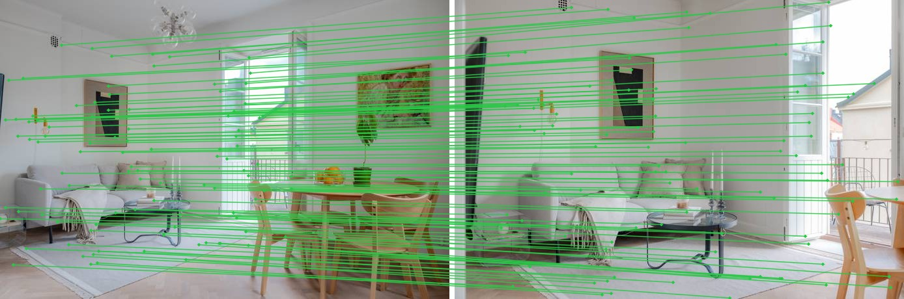
принято; проверочные соответствия: 1010/1101; медиана ошибки 3D: 0.056 м; гравитация: 1.3°. Отдельная диагностика масштаба: s=1.028; принято; проверочные соответствия: 1006/1101; медиана ошибки 3D: 0.035 м; гравитация: 1.3°
принято; проверочные соответствия: 852/998; медиана ошибки 3D: 0.034 м; гравитация: 0.3°. Отдельная диагностика масштаба: s=0.993; принято; проверочные соответствия: 848/998; медиана ошибки 3D: 0.034 м; гравитация: 0.3°
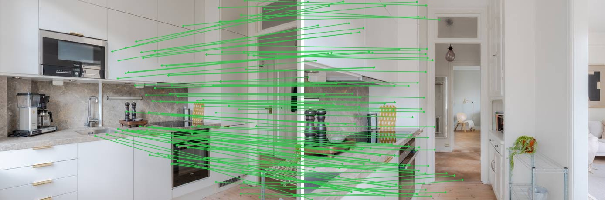
принято; проверочные соответствия: 843/998; медиана ошибки 3D: 0.043 м; гравитация: 0.1°. Отдельная диагностика масштаба: s=0.996; принято; проверочные соответствия: 840/998; медиана ошибки 3D: 0.043 м; гравитация: 0.1°

принято; проверочные соответствия: 845/1116; медиана ошибки 3D: 0.062 м; гравитация: 1.4°. Отдельная диагностика масштаба: s=1.045; принято; проверочные соответствия: 1041/1116; медиана ошибки 3D: 0.043 м; гравитация: 1.7°
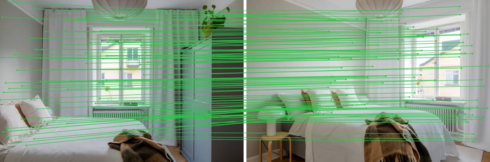
принято; проверочные соответствия: 759/1116; медиана ошибки 3D: 0.061 м; гравитация: 0.9°. Отдельная диагностика масштаба: s=1.040; принято; проверочные соответствия: 817/1116; медиана ошибки 3D: 0.054 м; гравитация: 1.3°
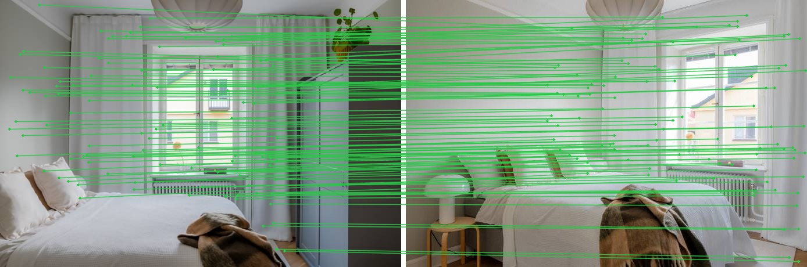
отклонено; проверочные соответствия: 0/24; медиана ошибки 3D: — м; гравитация: —°; причина: вырожденная геометрия или нет согласованного решения. Отдельная диагностика масштаба: s=—; отклонено; проверочные соответствия: 0/24; медиана ошибки 3D: — м; гравитация: —°; причина: вырожденная геометрия или нет согласованного решения
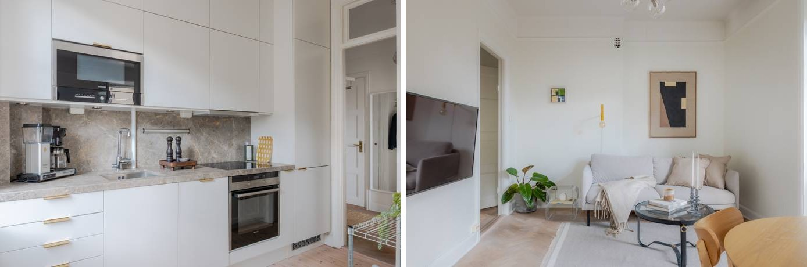
отклонено; проверочные соответствия: 0/24; медиана ошибки 3D: — м; гравитация: —°; причина: вырожденная геометрия или нет согласованного решения. Отдельная диагностика масштаба: s=—; отклонено; проверочные соответствия: 0/24; медиана ошибки 3D: — м; гравитация: —°; причина: вырожденная геометрия или нет согласованного решения

отклонено; проверочные соответствия: 0/13; медиана ошибки 3D: — м; гравитация: —°; причина: мало независимых проверочных соответствий. Отдельная диагностика масштаба: s=—; отклонено; проверочные соответствия: 0/13; медиана ошибки 3D: — м; гравитация: —°; причина: мало независимых проверочных соответствий
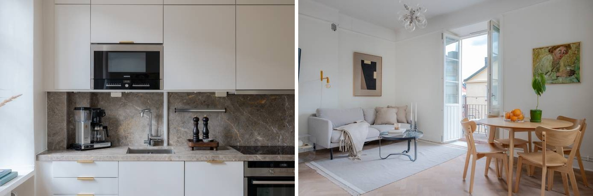
отклонено; проверочные соответствия: 0/13; медиана ошибки 3D: — м; гравитация: —°; причина: мало независимых проверочных соответствий. Отдельная диагностика масштаба: s=—; отклонено; проверочные соответствия: 0/13; медиана ошибки 3D: — м; гравитация: —°; причина: мало независимых проверочных соответствий
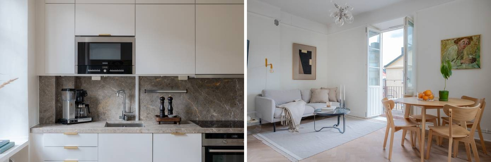
отклонено; проверочные соответствия: 956/1058; медиана ошибки 3D: 0.117 м; гравитация: 1.8°; причина: недостаточный пространственный охват, ошибка обратной проекции. Отдельная диагностика масштаба: s=0.855; отклонено; проверочные соответствия: 1006/1058; медиана ошибки 3D: 0.038 м; гравитация: 1.4°; причина: недостаточный пространственный охват

отклонено; проверочные соответствия: 1005/1058; медиана ошибки 3D: 0.081 м; гравитация: 2.8°; причина: недостаточный пространственный охват, ошибка обратной проекции. Отдельная диагностика масштаба: s=0.909; отклонено; проверочные соответствия: 1008/1058; медиана ошибки 3D: 0.033 м; гравитация: 2.8°; причина: недостаточный пространственный охват
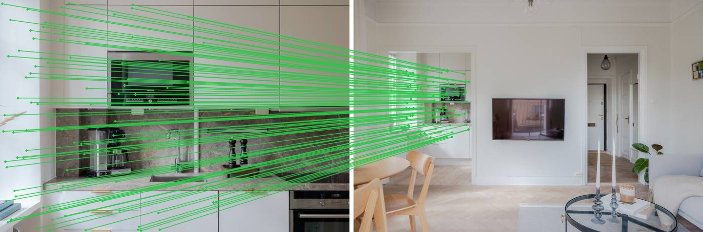
отклонено; проверочные соответствия: 0/0; медиана ошибки 3D: — м; гравитация: —°; причина: мало независимых проверочных соответствий. Отдельная диагностика масштаба: s=—; отклонено; проверочные соответствия: 0/0; медиана ошибки 3D: — м; гравитация: —°; причина: мало независимых проверочных соответствий

отклонено; проверочные соответствия: 0/0; медиана ошибки 3D: — м; гравитация: —°; причина: мало независимых проверочных соответствий. Отдельная диагностика масштаба: s=—; отклонено; проверочные соответствия: 0/0; медиана ошибки 3D: — м; гравитация: —°; причина: мало независимых проверочных соответствий
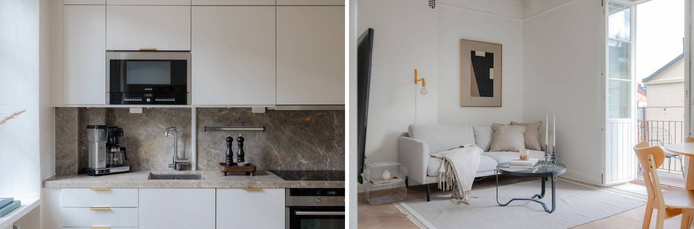
отклонено; проверочные соответствия: 1114/1134; медиана ошибки 3D: 0.059 м; гравитация: 1.3°; причина: ошибка обратной проекции. Отдельная диагностика масштаба: s=0.932; принято; проверочные соответствия: 1129/1134; медиана ошибки 3D: 0.020 м; гравитация: 1.3°
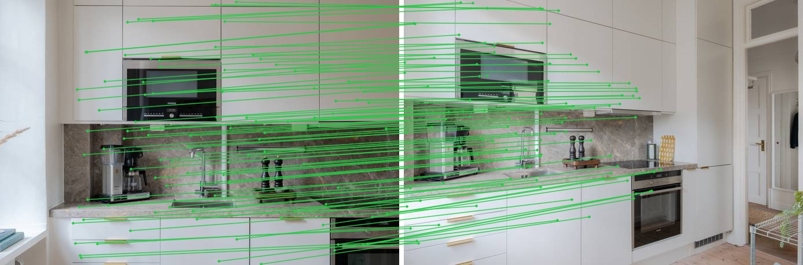
принято; проверочные соответствия: 1126/1134; медиана ошибки 3D: 0.043 м; гравитация: 1.5°. Отдельная диагностика масштаба: s=0.963; принято; проверочные соответствия: 1127/1134; медиана ошибки 3D: 0.034 м; гравитация: 1.5°
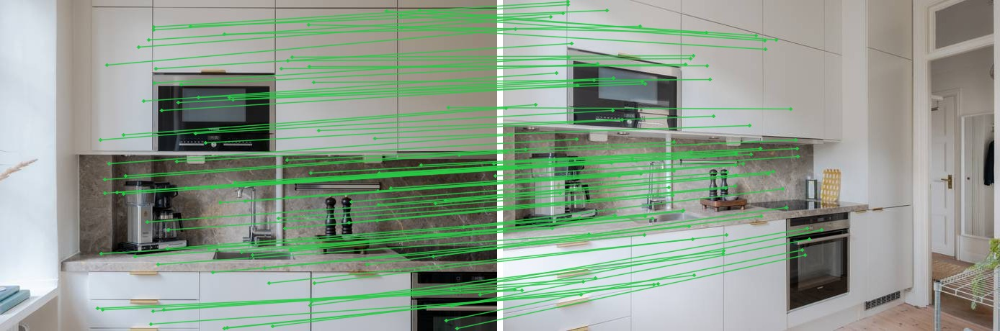
принято; проверочные соответствия: 389/920; медиана ошибки 3D: 0.154 м; гравитация: 1.0°. Отдельная диагностика масштаба: s=0.993; принято; проверочные соответствия: 392/920; медиана ошибки 3D: 0.154 м; гравитация: 1.0°

принято; проверочные соответствия: 375/920; медиана ошибки 3D: 0.175 м; гравитация: 0.6°. Отдельная диагностика масштаба: s=1.027; принято; проверочные соответствия: 386/920; медиана ошибки 3D: 0.165 м; гравитация: 0.7°
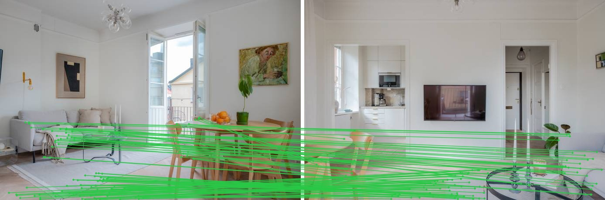
отклонено; проверочные соответствия: 0/22; медиана ошибки 3D: — м; гравитация: —°; причина: мало независимых проверочных соответствий. Отдельная диагностика масштаба: s=—; отклонено; проверочные соответствия: 0/22; медиана ошибки 3D: — м; гравитация: —°; причина: мало независимых проверочных соответствий

отклонено; проверочные соответствия: 0/22; медиана ошибки 3D: — м; гравитация: —°; причина: мало независимых проверочных соответствий. Отдельная диагностика масштаба: s=—; отклонено; проверочные соответствия: 0/22; медиана ошибки 3D: — м; гравитация: —°; причина: мало независимых проверочных соответствий
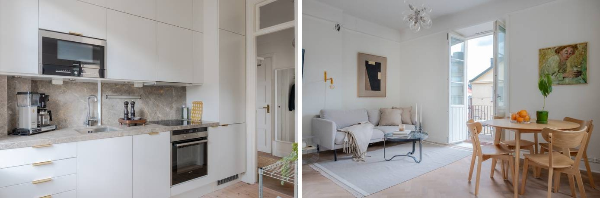
отклонено; проверочные соответствия: 249/1020; медиана ошибки 3D: 0.300 м; гравитация: 0.7°; причина: ошибка обратной проекции, недостаточная доля согласованных точек. Отдельная диагностика масштаба: s=1.014; отклонено; проверочные соответствия: 261/1020; медиана ошибки 3D: 0.297 м; гравитация: 0.8°; причина: ошибка обратной проекции, недостаточная доля согласованных точек
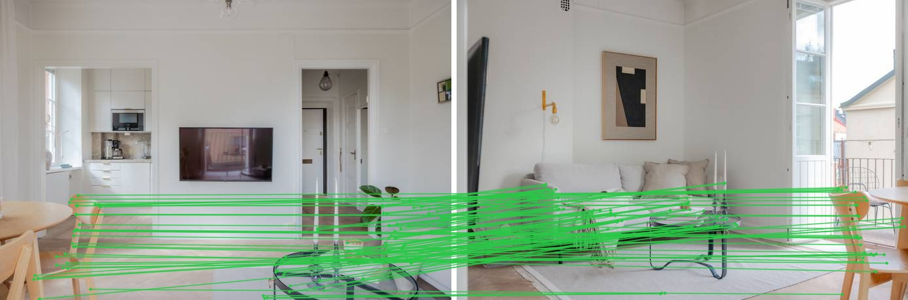
отклонено; проверочные соответствия: 129/1020; медиана ошибки 3D: 0.263 м; гравитация: 2.1°; причина: ошибка обратной проекции, недостаточная доля согласованных точек. Отдельная диагностика масштаба: s=0.973; отклонено; проверочные соответствия: 160/1020; медиана ошибки 3D: 0.337 м; гравитация: 1.0°; причина: ошибка обратной проекции, недостаточная доля согласованных точек
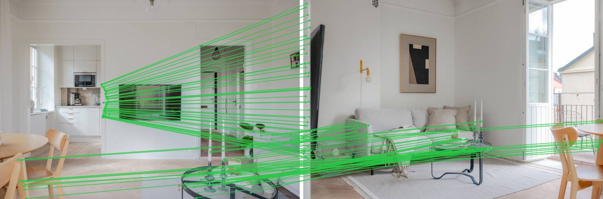
отклонено; проверочные соответствия: 856/985; медиана ошибки 3D: 0.080 м; гравитация: 1.7°; причина: ошибка обратной проекции. Отдельная диагностика масштаба: s=0.938; принято; проверочные соответствия: 926/985; медиана ошибки 3D: 0.038 м; гравитация: 1.5°
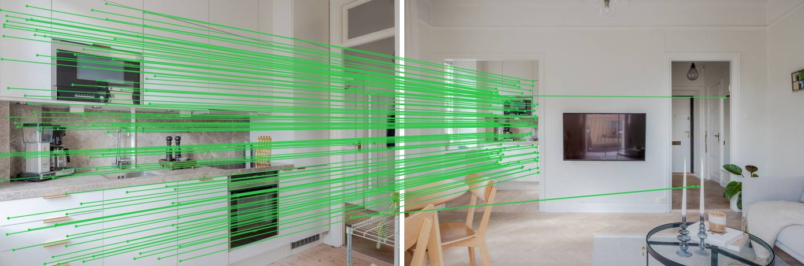
отклонено; проверочные соответствия: 938/985; медиана ошибки 3D: 0.069 м; гравитация: 1.0°; причина: ошибка обратной проекции. Отдельная диагностика масштаба: s=0.975; принято; проверочные соответствия: 932/985; медиана ошибки 3D: 0.049 м; гравитация: 1.0°
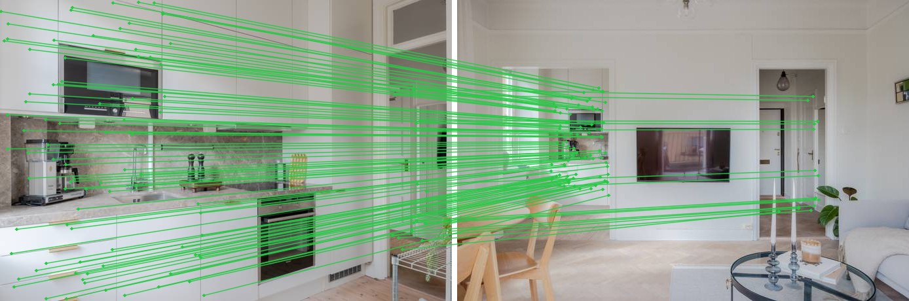
отклонено; проверочные соответствия: 0/59; медиана ошибки 3D: — м; гравитация: —°; причина: мало независимых проверочных соответствий. Отдельная диагностика масштаба: s=—; отклонено; проверочные соответствия: 0/59; медиана ошибки 3D: — м; гравитация: —°; причина: мало независимых проверочных соответствий

отклонено; проверочные соответствия: 0/59; медиана ошибки 3D: — м; гравитация: —°; причина: мало независимых проверочных соответствий. Отдельная диагностика масштаба: s=—; отклонено; проверочные соответствия: 0/59; медиана ошибки 3D: — м; гравитация: —°; причина: мало независимых проверочных соответствий
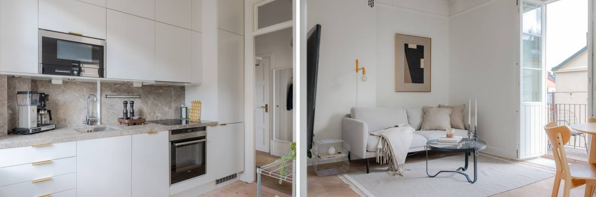
Группа построена только по принятым жёстким преобразованиям. Отдельных компонент: 3; замыканий циклов: 0. Невидимые поверхности не достраиваются; z=0 — камера, высота пола не определена.
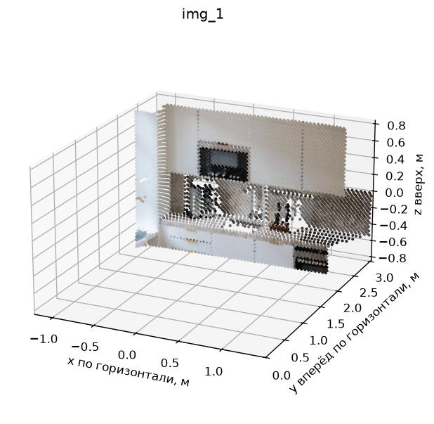
Группа построена только по принятым жёстким преобразованиям. Отдельных компонент: 3; замыканий циклов: 0. Невидимые поверхности не достраиваются; z=0 — камера, высота пола не определена.

Группа построена только по принятым жёстким преобразованиям. Отдельных компонент: 3; замыканий циклов: 0. Невидимые поверхности не достраиваются; z=0 — камера, высота пола не определена.
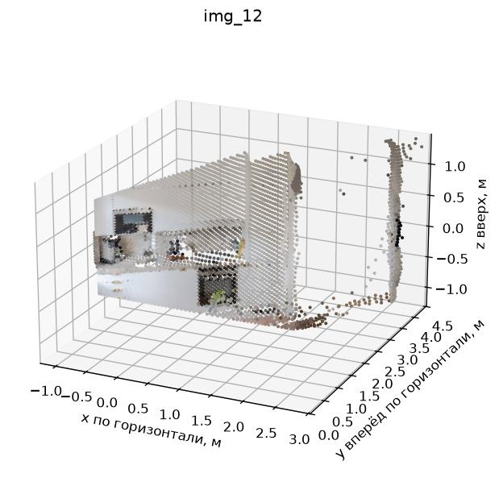
Группа построена только по принятым жёстким преобразованиям. Отдельных компонент: 2; замыканий циклов: 0. Невидимые поверхности не достраиваются; z=0 — камера, высота пола не определена.

Группа построена только по принятым жёстким преобразованиям. Отдельных компонент: 2; замыканий циклов: 0. Невидимые поверхности не достраиваются; z=0 — камера, высота пола не определена.
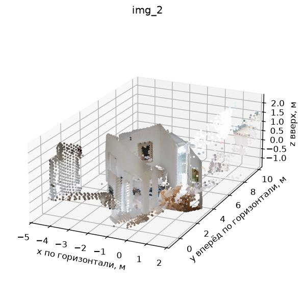